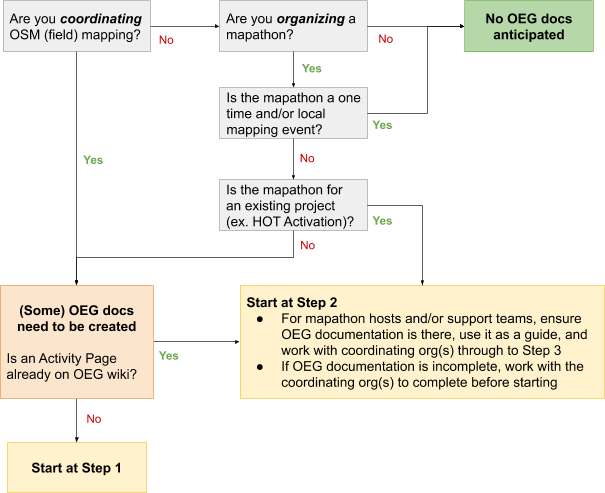

3.2. Organized OSM Editing
Course Objectives
This section will inform you on how to organized OSM editing activities. By the end of this you should be able to:
- Understand the considerations for managing and sourcing mapper for an organized editing
- Learn the organized OSM editing Guidance and Compliance
- Able to setup organized OSM editing guidance
Learning Activities
Before starting any mapping project, it is important to assess, and if necessary, update the OpenStreetMap basemap through remote mapping. This remote mapping process helps ensure that the buildings and roads used during a field mapping phase are up to date, improving the quality and effectiveness of field mapping efforts. For example, using remote mapping, your team can identify buildings or entire villages that might have been missed otherwise.
While the anticipated project workflow influences the area to be remotely mapped, it is important to note that the budget and time available may place restrictions on what is feasible to be digitized. In this way, remote mapping can also influence the workflow, making the remote mapping plan an important part of the planning process.
Sourcing Your Remote Mapper
Remote mapping takes time and effort. This process can take several different forms ranging from being quickly completed with a few volunteer mappers for a small area to an organized, paid team working for several months to complete a region. There are four sourcing options that you could consider when you want to organize your mapping efforts:
- Global HOT/OSM Communtiy: The global HOT/OSM community is the first source that you could support your mapping efforts. As of August 2023, 454,800 volunteers from around the world have support us and mapped over 149 million buildings on HOT’s Tasking Manager to support mapping efforts around the world.
- Dedicated team of digitizers (5+ people): Some projects may find that the best way to meet the needs of their project is to hire a small team of dedicated digitizers to systematically map an area. Typically this dedicated team works together in-person, which allows for consistent training and quality assurance. However, it is possible to use a paid team of mappers working remotely if mappers are experienced and do not require extensive training. We do recommend that when looking to hire a team of mappers that you reach out to the local OSM community with these opportunities
- Mixed approach (paid digitizers and global community): When there are timelines in place but the scope of the work is too large for your team, one option is to have a mix of paid digitizers and the global community.
- Hosting Mapathons: Another option that blends utilizing volunteers with some of the benefits of a dedicated team is hosting a series of Mapathons. These mapathons typically bring together groups of volunteers (ranging from university students to corporate volunteer events) to map a task together in person.
The resources and time needed to map your area of interest depends on these five factors:
- Size Area of Interest (AoI): Are you mapping one city or an entire district?
- Timeline: Does the area need to be mapped in a few weeks? Months?
- Resources needed: Does your project have budget to pay digitizers and validators?
- Quality: What are your resources for ensuring that the mapped data is high quality? Does the data need to be immediately high quality, or is there room for new mappers to make mistakes?
- Features and attributes: Does your project require only buildings to be mapped? Roads? Will any features (such as roof:material) be added by remote mappers?
| Factors | Global HOT/OSM Community | Dedicated team of digitizer (5+ people) | Mixed (Paid digitizer & OSM Community) | Mapathons |
|---|---|---|---|---|
| Size of AoI | Can cover any size of digitization efforts (neighborhood or countries) | Can cover any size as they can covers larger areas over shorter period. | If you have smaller team, combine with global volunteers could covers larger area | only recommended for smaller areas because it will depends on number of people attend, skills, and the duration of mapathon |
| Timeline | Suitable for rapid response (in wake of disaster or humanitarian needs). May not suitable for other type project with controlled timeline. | Favorable for project that have limited timeline. Newly trained digitizers can map 500-1000 buildings per day depending on density and imagery quality. | By including some paid digitizers, this method can help keep the project in development while relying on the global community. | This option can be faster than relying solely on the global community, but slower than having a dedicated team of volunteers. |
| Resources | Free | Requires to set budget for hiring the team. Also may need to provide workspace with consistent internet connection. | Smaller budget than a full team, but will still likely need to provide a dedicated workspace and consistent internet connection. | Smaller budget than a dedicated in-person team, but event space, internet, and refreshments will need to be covered. |
| Quality | Difficult to control the quality of data being immediately mapped. Additional effort to review and fix mistakes | Easier to train and control its quality | By including paid digitizers, your team can choose to focus on validating the efforts of the global community and increase the consistency of quality mapping edits. | mapathons have the possibility of requiring more effort on the validation side of mapping. |
| Features and attributes | Perfect for simple tasks (mapping building). Additional features to may still doable as long as not complex and require to extra checks afterwards. | Favorable if you have special features or tags that needs to be added. Having local context also extremely helpful for adding unique features and attributes. | You can rely on the global community to develop the basemap and then your paid team can add those features later. Or, you can use your small team to validate the special features and attributes added by the global community. | Mapathons allow for better training and management of volunteers to adding unique features or attributes. However, similar to data quality, this will still require a heavier lift in validation than using a dedicated team. |
Managing your digitization efforts
Once you decide how you will source your team of mappers (paid or unpaid, local or remote), you will need to set up a plan and gather resources. Here’s a checklist of some questions to consider:
- What will be your team structure? We recommend having one dedicated validator for every five digitizers.
- Have you trained validators? Our training materials for validators are available as here.
- How will you track the progress of your mapping? When setting up a large number of mapping tasks, it helps to set up a tracker to monitor the progress of all tasks.

Organised Editing Compliance Procedures
The OSM Foundation has set up Organised Editing Guidelines for documenting organized editing efforts. While it is not a requirement or policy, HOT highly encourages all groups to comply with these procedures when applicable. For simplicity and ease of understanding these guidelines, HOT has developed the following guide, however, HOT does not take responsibility for compliance.
The following is based on HOT’s suggested procedures for complying with the Organised Editing Guidelines (OEG) - as of June 2019
Purpose
What problem(s) does the OEG aim to address, and how can we best comply with, and address, these concerns?
- Transparency - the OEG attempts to make it easier for local mappers to know what organizations are editing in their area.
- Communication - the OEG attempts to make it easier for local mappers to communicate with organized editors and editing teams.
- Conflict Resolution - the OEG attempts to provide a basis for coordinating, as well as a mechanism for local communities to form a complaint against an organized editing activity.
Documentation
- The official OEG can be found here: https://osmfoundation.org/wiki/Organised_Editing_Guidelines
- The official OEG Activities page here: https://wiki.openstreetmap.org/wiki/Organised_Editing/Activities
- The HOT OEG Activities page here: https://wiki.openstreetmap.org/wiki/Organised_Editing/Activities/Humanitarian_OpenStreetMap_Team
Requirements
What exactly is required by the Organized Editing Guidelines (OEG)?
Project Documentation on the OSM Wiki:
- Organisation and contact info
- description and link to organization
- a way to contact the project manager or team
- Project details
- the goal and purpose of the activity
- the timeframe for the activity
- any non-standard tools and data sources used, and their usage conditions
- links where the community can access any non-standard tools or data sources
- Standard changeset comment
- specific hashtag for tracking
- link to related organized editing activity
- Team information
- the accounts of participating persons that wish to be identified, with any details they wish to include
- if participants will receive training material or written instructions, a copy of, or link to, these materials
- links to organized editing organization(s) and activity(ies) on user profile
- sufficient training for project (i.e. local tagging schemas, etc.)
- if the success or performance of participants will be measured in any way, a description of the metrics used for this
Project Execution and Follow-up
- Communication with the local community
- 2 week notice for non-emergency projects, open forum/mailing list
- 2 working day response for community inquiries throughout project
- Plans for a “post-event clean up” to validate edits, especially if the activity introduces new contributors to OpenStreetMap.
- After the activity has completed, or at least once a month for ongoing efforts, a description of the results.
Does this apply to me?

Common Elements: Common elements of projects can be jointly-documented among projects.
For HOT, most projects fall under OEG compliance, and will share the following:
- The organization and contact information
- Instructions to a certain degree, i.e. basic mapping covered with LearnOSM materials
- A somewhat standard validation process; of course be explicit about any ground truthing
- Somewhat standardized tool set(s) (i.e. TM for Remote, ODK/OMK for ground)
- Reports/descriptions/news at a central location (i.e. HOT website)
Step-by-step Processes
Project Pre-launch
- Have at least a skeleton wiki/web-page ready to share with local community
- How to edit the wiki: https://learnosm.org/en/intermediate/editing-the-wiki/
- See https://wiki.openstreetmap.org/wiki/Template:Activatio for a template/example of Activation wiki-pages
- How to create HOT Website projects
- Local contact made a minimum of 2 weeks prior of launch; through their open mailing-list, or forum, most likely to contact the key leaders in the community
- Look here for mailing lists: https://lists.openstreetmap.org/listinfo
- Search wiki by country as they may have other communication channels listed there, and sometimes individual points of contact
- And try https://github.com/osmlab/osm-community-index
- Only if you exhaust these options is it acceptable to assume no local community
- Set-up OSM User Profiles:
- Consider registering team on OSM with designated usernames
- Can still be personalized, such as JaneDoe_Validator, JohnDoe_Mapper, etc.
- Consider also using organization email account(s) 2. Ideally, the Project Manager or Team Lead should get, or be able to access all messaging. If a mapper leaves, but then gets messages from the community, you will want to be able to reply
- All profiles should at least have a link to the OEG project page, organizations website, or (for HOT) preferably a link to the individual’s profile on the website
Project Launch
- Ensure the project has an entry in OEG activities page
- Have the required details of your plan in a wiki-page or (for HOT) a hotosm.org website project-page
- Appoint one or two people that will handle rapid replying to all community traffic (2 business day max)
- Periodic Reports are typically handled through blog (for HOT), but can also consider posting results on wiki’s, etc.
Project Completion
- Make sure there is a plan to finish any remaining validation and that is communicated to the local community.
- With constant communication with the local community throughout the project, it should be fairly easy and straightforward to determine when the project will be done and the Community is back on their own, with conduits to project org(s).
- Before closing your project out, make sure there is a final blog-post or report documenting the closure.
- Doc/report does not need to be full report requested by a donor, as example, but generally the results: successful or not, lessons learned
- Last, move your row in the OEG Activities table from Active to Previous
[Quiz] Check Your Knowledge
-
What mapping sourcing you need if you want to map ten districts, with detailed attributes and information, and expected to be mapped in two months
a. Mapathon
b. Global HOT/OSM community
c. Dedicated team of digitizer (+5 people)
d. Internal HOT’s staffs
-
We need to setup a simple digitization task for global HOT/OSM community. Which option that considered as a simple digitization attributes?
a. Point of Interest
b. Buildings
c. Road networks with additional tags
d. River, Buildings, and general health facilities
-
The OSM Foundation released organized editing compliance document for organization/company who lead digitization effort with a large team of digitized. Which aspect that they need to record in the wiki OSM?
a. List of digitizers, active email of project coordinators/managers, and salary rate
b. List of digitizers, active phone number of project coordinator/manager, and project overview
c. List of digitizer, project area, project overview, and list of changeset comments
d. All of them are correct
Answer: 1. C | 2. B | 3. C
Activity Checklist
Now you already know how to organized your mapping project. By the end of this section you should be able to:
- Determine the mapping size, effort, and type of sourcing
- Understand the difference between each sourcing options
- Tracking the digitization effort
- Setup Organized Editing Compliance document